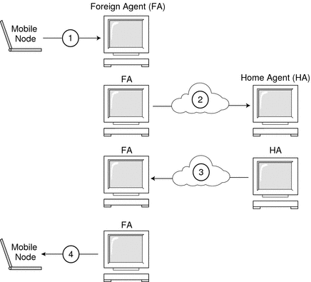

|
|||
|
1. Solaris TCPIP Protocol Suite (Overview) 2. Planning an IPv4 Addressing Scheme (Tasks 3. Planning an IPv6 Addressing Scheme (Overview) 4. Planning an IPv6 Network (Tasks) 5. Configuring TCP/IP Network Services and IPv4 Addressing (Tasks) 6. Administering Network Interfaces (Tasks) 7. Enabling IPv6 on a Network (Tasks) 8. Administering a TCP/IP Network (Tasks) 9. Troubleshooting Network Problems (Tasks) 10. TCP/IP and IPv4 in Depth (Reference) 12. About Solaris DHCP (Overview) 13. Planning for DHCP Service (Tasks) 14. Configuring the DHCP Service (Tasks) 15. Administering DHCP (Tasks) 16. Configuring and Administering DHCP Clients 17. Troubleshooting DHCP (Reference) 18. DHCP Commands and Files (Reference) 19. IP Security Architecture (Overview) 21. IP Security Architecture (Reference) 22. Internet Key Exchange (Overview) 24. Internet Key Exchange (Reference) 25. Solaris IP Filter (Overview) Mobile IP With Reverse Tunneling Routing Datagrams to and From Mobile Nodes Security Considerations for Mobile IP 28. Administering Mobile IP (Tasks) 29. Mobile IP Files and Commands (Reference) 30. Introducing IPMP (Overview) 31. Administering IPMP (Tasks) Part VI IP Quality of Service (IPQoS) 32. Introducing IPQoS (Overview) 33. Planning for an IPQoS-Enabled Network (Tasks) 34. Creating the IPQoS Configuration File (Tasks) 35. Starting and Maintaining IPQoS (Tasks) 36. Using Flow Accounting and Statistics Gathering (Tasks) |
Mobile IP RegistrationMobile nodes detect when they have moved from one subnet to another subnet through the use of agent advertisements. When the mobile node receives an agent advertisement that indicates that the mobile node has changed locations, the mobile node registers through a foreign agent. Even though the mobile node might have acquired its own colocated care-of address, this feature is provided to enable sites to restrict access to mobility services. Mobile IP registration provides a flexible mechanism for mobile nodes to communicate the current reachability information to the home agent. The registration process enables mobile nodes to perform the following tasks:
Registration messages exchange information between a mobile node, a foreign agent, and the home agent. Registration creates or modifies a mobility binding at the home agent. Registration associates the home address of the mobile node with the care-of address of the mobile node for the specified lifetime. The registration process also enables mobile nodes to do the following functions:
Mobile IP defines the following registration processes for a mobile node:
These registration processes involve the exchange of registration requests and registration reply messages. When the mobile node registers by using a foreign agent, the registration process takes the following steps, which the subsequent figure shows:
Figure 27-7 Mobile IP Registration ProcessWhen the mobile node registers directly with the home agent, the registration process requires only the following steps:
Also, either the foreign agent or the home agent might require a reverse tunnel. If the foreign agent supports reverse tunneling, the mobile node uses the registration process to request a reverse tunnel. The mobile node sets the reverse tunnel flag in the registration request to request a reverse tunnel. Network Access Identifier (NAI)Authentication, authorization, and accounting (AAA) servers, in use within the Internet, provide authentication and authorization services for dialup computers. These services are likely to be equally valuable for mobile nodes that use Mobile IP when the nodes attempt to connect to foreign domains with AAA servers. AAA servers use the Network Access Identifier (NAI) to identify clients. A mobile node can identify itself by including the NAI in the Mobile IP registration request. Because the NAI is typically used to uniquely identify the mobile node, the home address of the mobile node is not always necessary to provide that function. Thus, a mobile node can authenticate itself. Consequently, a mobile node can be authorized for connection to the foreign domain without even having a home address. To request that a home address be assigned, a message that contains the mobile node NAI extension can set the home address field to zero in the registration request. Mobile IP Message AuthenticationEach mobile node, foreign agent, and home agent supports a mobility security association between the various Mobile IP components. The security association is indexed by the security parameter index (SPI) and IP address. In the instance of the mobile node, this address is the home address of the mobile node. Registration messages between a mobile node and the home agent are authenticated with the mobile-home authentication extension. In addition to mobile-home authentication, which is mandatory, you can use the optional mobile-foreign agent and home-foreign agent authentications. Mobile Node Registration RequestA mobile node uses a registration request message to register with the home agent. Thus, the home agent can create or modify a mobility binding for that mobile node (for example, with a new lifetime). The foreign agent can relay the registration request to the home agent. However, if the mobile node is registering a colocated care-of address, then the mobile node can send the registration request directly to the home agent. If the foreign agent advertises that registration messages must be sent to the foreign agent, then the mobile node must send the registration request to the foreign agent. Registration Reply MessageA mobility agent returns a registration reply message to a mobile node that has sent a registration request message. If the mobile node requests service from a foreign agent, that foreign agent receives the reply from the home agent. Subsequently, the foreign agent relays the reply to the mobile node. The reply message contains the necessary codes to inform the mobile node and the foreign agent about the status of the registration request. The message also contains the lifetime that is granted by the home agent. The lifetime can be smaller than the original request. The registration reply can also contain a dynamic home address assignment. Foreign Agent ConsiderationsThe foreign agent plays a mostly passive role in Mobile IP registration. The foreign agent adds all mobile nodes that are registered to the visitor table. The foreign agent relays registration requests between mobile nodes and home agents. Also, when the foreign agent provides the care-of address, the foreign agent de-encapsulates datagrams for delivery to the mobile node. The foreign agent also sends periodic agent advertisement messages to advertise the presence of the foreign agent. If home agents and foreign agents support reverse tunnels, and the mobile node requests a reverse tunnel, the foreign agent then tunnels all the packets from the mobile node to the home agent. The home agent then sends the packets to the correspondent node. This process is the reverse of the home agent tunneling all of the mobile node's packets to the foreign agent for delivery to the mobile node. A foreign agent that supports reverse tunnels advertises that the reverse tunnel is supported for registration. Because of the local policy, the foreign agent can deny a registration request when the reverse tunnel flag is not set. The foreign agent can only distinguish multiple mobile nodes with the same (private) IP address when these mobile nodes are visiting different interfaces on the foreign agent. In the forward tunnel situation, the foreign agent distinguishes between multiple mobile nodes that share the same private addresses by looking at the incoming tunnel interface. The incoming tunnel interface maps to a unique home agent address. Home Agent ConsiderationsHome agents play an active role in the registration process. The home agent receives registration requests from the mobile node. The registration request might be relayed by the foreign agent. The home agent updates its record of the mobility bindings for this mobile node. The home agent issues a suitable registration reply in response to each registration request. The home agent also forwards packets to the mobile node when the mobile node is away from the home network. A home agent might not have to have a physical subnet configured for mobile nodes. However, the home agent must recognize the home address of the mobile node through the mipagent.conf file or some other mechanism when the home agent grants registration. For more information about mipagent.conf, refer to Creating the Mobile IP Configuration File. A home agent can support private addressed mobile nodes by configuring the private addressed mobile nodes in the mipagent.conf file. The home addresses that are used by the home agent must be unique. Dynamic Home Agent DiscoveryIn some situations, the mobile node might not know the home agent address when the mobile node attempts to register. If the mobile node does not know the home agent address, the mobile node can use dynamic home agent address resolution to learn the address. In this situation, the mobile node sets the home agent field of the registration request to the subnet-directed broadcast address of its home network. Each home agent that receives a registration request with a broadcast destination address rejects the mobile node's registration by returning a rejection registration reply. By doing so, the mobile node can use the home agent's unicast IP address that is indicated in the rejection reply when the mobile node next attempts registration. |
||
|